Downloading DEM Data
First of all, let’s decide on an area of interest. For the purpose of this
tutorial, we will focus on the country of Switzerland. We can quickly get a
polygon of the country’s borders using the getData() function from the
raster package. I will also use the opportunity to load some additional
packages that we’ll use later.
# Load required packages
library(raster) # To manipulate raster data
library(elevatr) # To download elevation data
library(viridis) # To get nice color palettes
library(rayshader) # To plot maps in 3D
# Download polygon for country (only on the national borders -> level = 0)
swiss <- getData("GADM", country = "CHE", level = 0)
plot(swiss)
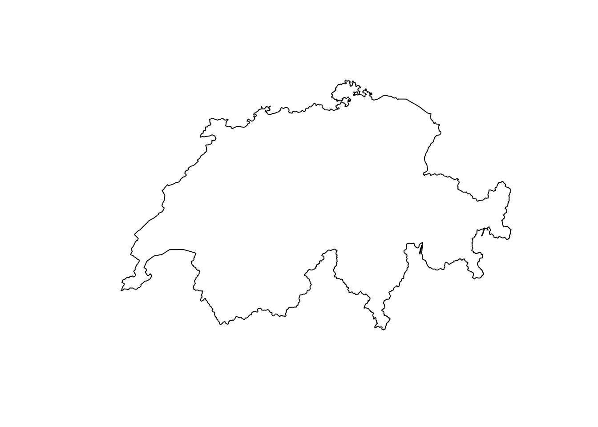
Now that we decided on an area of interest, we have two options to download a
DEM:
- Option 1: Use the
getData() function from the raster package
- Option 2: Use the
get_elev_raster() function from the elevatr package
If we use the raster package, we can either download elevation data around a
desired coordinate or for a desired country. Since we already decided for a
country, we can go for the latter and download data for the country of
Switzerland (country code CHE).
# Download DEM data for a desired country
elev <- getData("alt", country = "CHE")
# Visualize it
plot(elev, col = viridis(50), box = F, axes = F, horizontal = T)
plot(swiss, add = T, border = "red", lwd = 2)
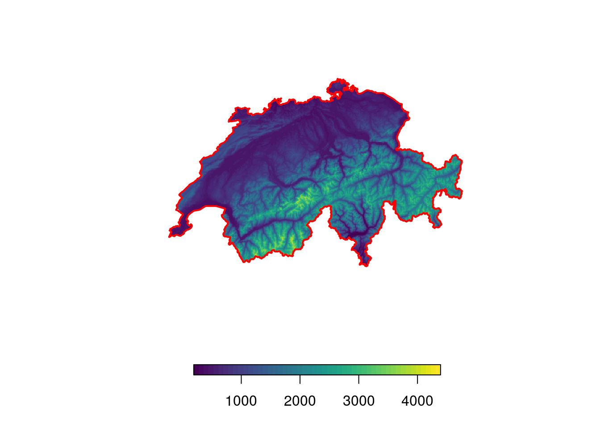
The download does not take long at all! While the downloaded raster has a rather
low resolution of 925 by 925 meters, this should suffice for most purposes (you
canactually calculate the resolution in meters using the approximation that 1
degree = 111’000 meters).
# Calculate resolution of raster (roughly in meters)
res(elev) * 111000
## [1] 925 925
Due to the limited options in the raster::getData() function, I personally
prefer to use the function get_elev_raster() from the elevatr package. This
function gives a bit more flexibility and enables us to change the resolution
and extent of the downloaded data. As the name suggests, the function retrieves
an elevation-raster for a desired area. In contrast to the raster::getData()
function, we can specify the area of interest using a polygon. In this case, we
can use the previously downloaded shapefile for Switzerland. Furthermore, we can
provide a zoom factor z that determines the resolution of the downloaded data.
The higher the zoom-factor, the higher the resolution. Of course the download
and stitching will take longer if we decide for a higher resolution. Because the
package will download data beyond the exact shapefile, we’ll need crop the
downloaded DEM to the exact area of Switzerland.
# Download DEM data and crop downloaded data
elev <- get_elev_raster(swiss, z = 7)
elev <- crop(elev, swiss)
# Visualize it
plot(elev, col = viridis(50), box = F, axes = F, horizontal = T)
plot(swiss, add = T, border = "red", lwd = 2)
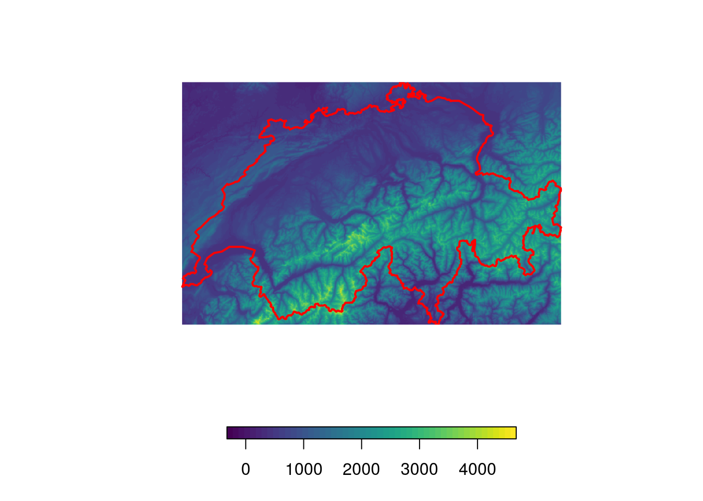
# Check resolution (could be increased even further)
res(elev) * 111000
## [1] 609.39 422.91
Once we downloaded the DEM in raster format, it’s straight forward to conduct
further analyses. For instance, let’s assume that we collected species occurence
data and that we now want to know the exact elevation at the sampled locations.
For this, we first randomly place some in Switzerland (the points represent our
hypothetical species occurences). Then, we can use the raster::extract()
function to determine the elevation at those locations. Finally, we’ll visualize
the locations and their respective elevation on a nice map.
# Randomly distribute locations (species occurences)
locs <- spsample(swiss, n = 20, type = "random")
# Identify elevation at each location
locs$Elevation <- extract(elev, locs)
locs$Elevation <- round(locs$Elevation)
# Visualize points and add indicate their height using labels
plot(elev, col = viridis(50), box = F, axes = F, horizontal = T)
plot(swiss, add = T, border = "red", lwd = 2)
plot(locs, add = T, col = "orange", pch = 20, cex = 0.5)
text(locs, label = "Elevation", col = "orange", cex = 0.5, pos = 3, offset = 0.2)
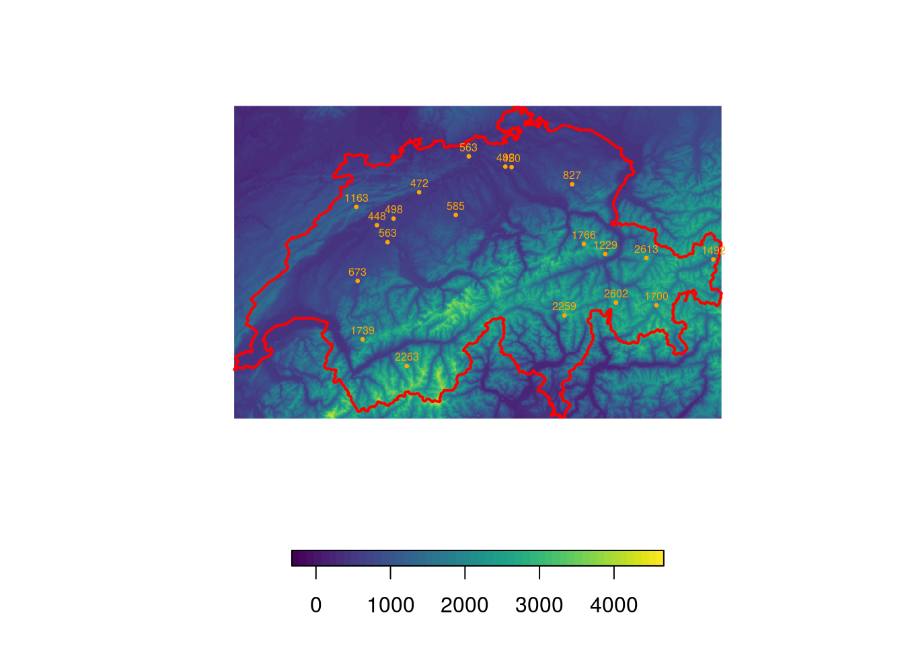
Deriving Terrain Features
Besides using the raw elevation data, we can also further process the DEM and
calculate derived metrics such as the slope (steepness of the terrain) and the
aspect (direction that a slope faces). From these two, we can finally compute
the hillshade, which we will use to create some nice relief plots.
# Calculate "aspect" and "slope"
aspect <- terrain(elev, "aspect")
slope <- terrain(elev, "slope")
# And now we can calculate the hillshade
hillshade <- hillShade(slope = slope, aspect = aspect)
# Visualize it
plot(hillshade, col = gray(60:100/100), box = F, axes = F, legend = F)
plot(swiss, add = T, border = "red", lwd = 2)
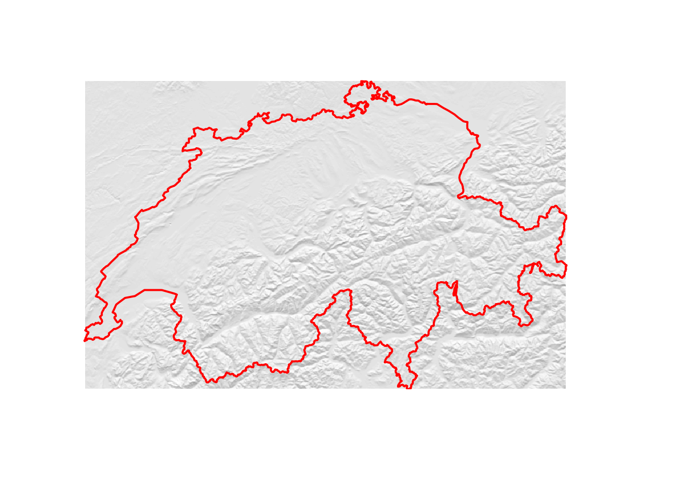
If you want to increase the “strength” of the hillshade, you can introduce a
modifier that artificially increases the variability in elevation as follows.
# Calculate "aspect" and "slope" using a modified DEM
modifier <- 2
aspect2 <- terrain(elev ^ modifier, "aspect")
slope2 <- terrain(elev ^ modifier, "slope")
# And now we can calculate the hillshade
hillshade2 <- hillShade(slope = slope2, aspect = aspect2)
# Visualize it
plot(hillshade2, col = gray(60:100/100), box = F, axes = F, legend = F)
plot(swiss, add = T, border = "red", lwd = 2)
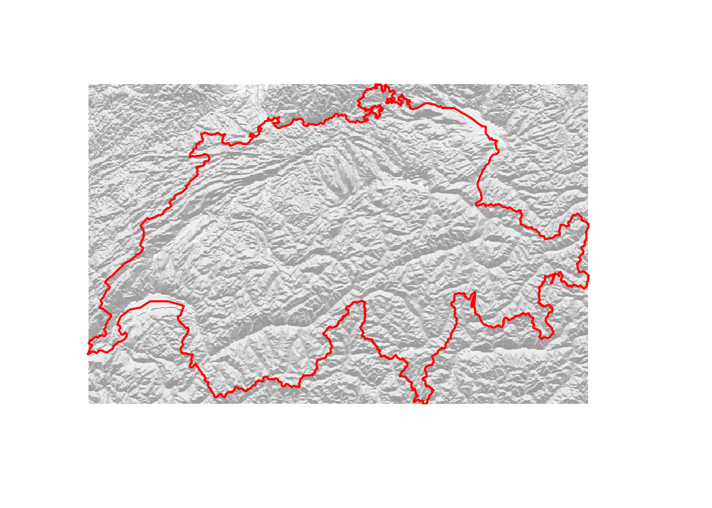
You may also be interested in the ruggedness of the terrain. For this, there’s
the terrain ruggedness index (TRI). The TRI is defined as the square root
of the average of the squared differences in elevation of a focal cell and its
eight neighbors (I know, this sounds very complicated but it’s actually a very
simple way to quantify how substantially the elevation varies within a few
cells). We can calculate the TRI by hand using the focal function. The focal
function basically creates a moving window and applies the function for terrain
ruggedness to this window. For our purposes, a 3x3 cell window will suffice.
# Define weights (size of moving window)
weights <- matrix(1, nrow = 3, ncol = 3)
# Function to calculate the terrain ruggedness index
ruggedness <- function(x){sum(abs(x[-5] - x[5])) / 8}
# Apply the function to the moving window
tri <- focal(elev, w = weights , fun = ruggedness, pad = TRUE, padValue = NA)
# Visualize
plot(tri, col = viridis(50), box = F, axes = F, horizontal = T)
plot(swiss, add = T, border = "red", lwd = 2)
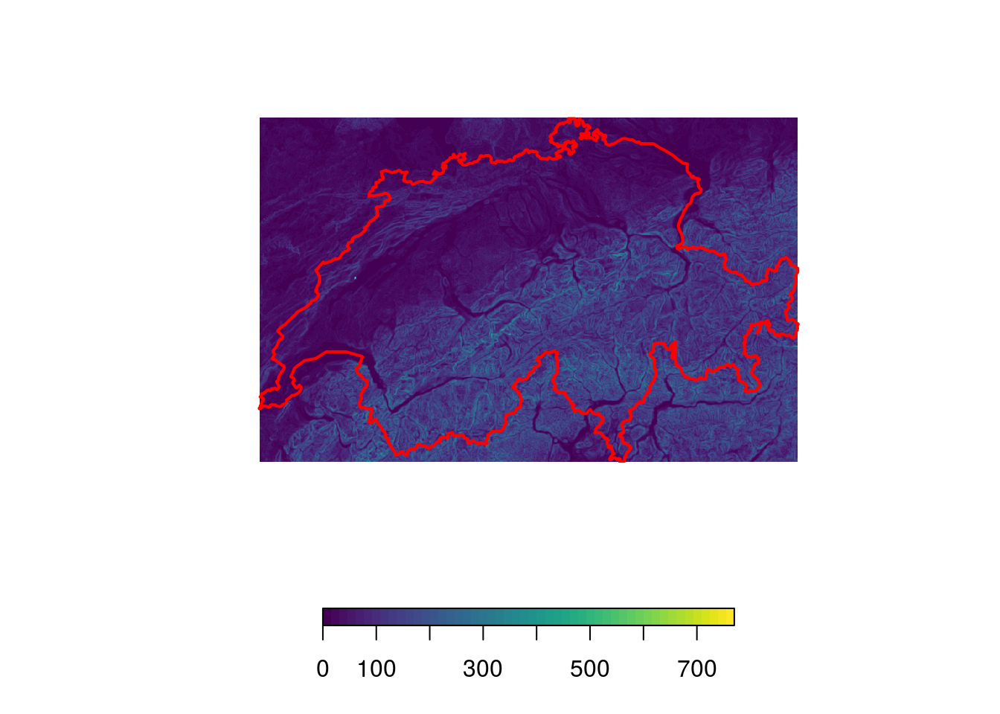
These are just a few examples that should get you started with elevation data.
We’ll now turn to more fun things and try to get some nice plots using the
rayshader package.
Having some Fun with Rayshader
Rayshader is a nice little package developed by Tyler
Morgan-Wall. The package is mainly intended to turn
your elevation maps into beautiful 3D plots, yet it also has some 3d plotting
capabilities for ggplot! There is a fantastic walk-through of the package
here. Here, I will use the package to add a bit of
depth to our elevation map of Switzerland. As a first step, we need to convert
the elevation raster into a matrix. We can do this using the function
raster_to_matrix(). We can then already generate a first plot.
# Convert the DEM-raster to a matrix
elmat <- raster_to_matrix(elev)
# Prepare a simple plot
elmat %>%
sphere_shade(., texture = "imhof1") %>%
plot_map()
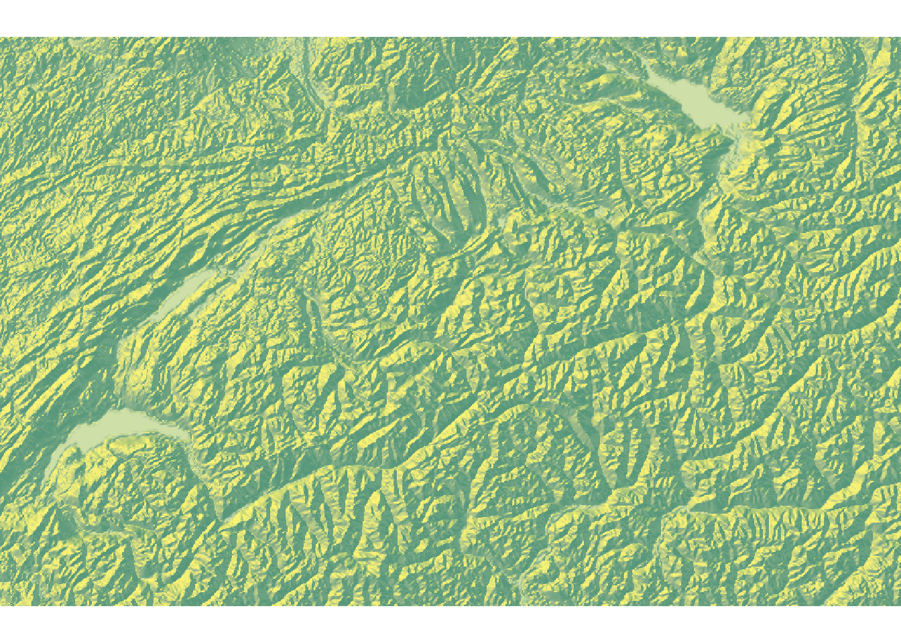
At this stage, the map looks somewhat boring. We can make it a bit more
interesting using two modifications. First, we can apply a mask and pretend that
anything outside of Switzerland has an elevation of 0. This will make the
country literally pop.
# Set elevation outside Switzerland to NA
elev <- mask(elev, swiss)
# Convert the raster to a matrix
elmat <- raster_to_matrix(elev)
# Visualize
elmat %>%
sphere_shade(., texture = "imhof1") %>%
plot_map()
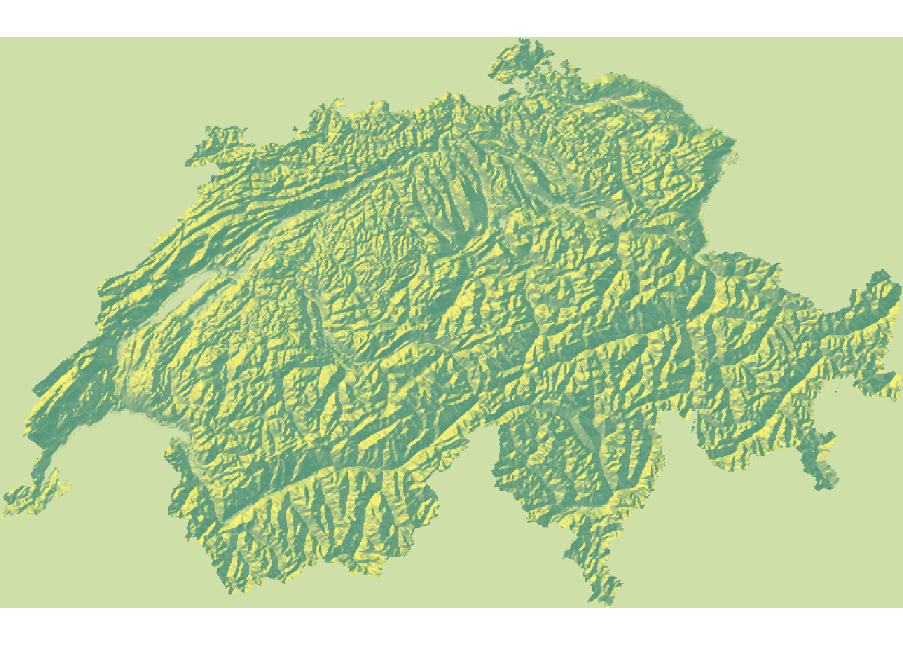
This already looks much better. As a second modification, we can add waterbodies
to our plot. This should add a bit of colour and really help to sell the map.
While the rayshader package comes with a function called detect_water(elev)
to detect waterbodies, I found the results to be unsatisfactory. Thus, I’ve
prepared a shapefile containing all major water-bodies of Switzerland. You can
download the shapefile from github and load it into R as follows.
# Load watermaps
url <- "https://github.com/DavidDHofmann/MajorWaters/archive/master.zip"
# Specify filename and download directory (we'll use a temporary directory)
dir <- tempdir()
file <- file.path(dir, "water.zip")
# Download the data
download.file(url = url, destfile = file)
# Extract the zip file
unzip(file, exdir = dir)
# Filepath to the extracted file
file <- file.path(dir, "MajorWaters-master", "geo_che_water.shp")
# Load the data
water <- shapefile(file)
# Visualize them on top of the hillshade map
plot(mask(hillshade, swiss), col = gray(60:100/100), box = F, axes = F, legend = F)
plot(water, add = T, col = "cornflowerblue", border = NA)
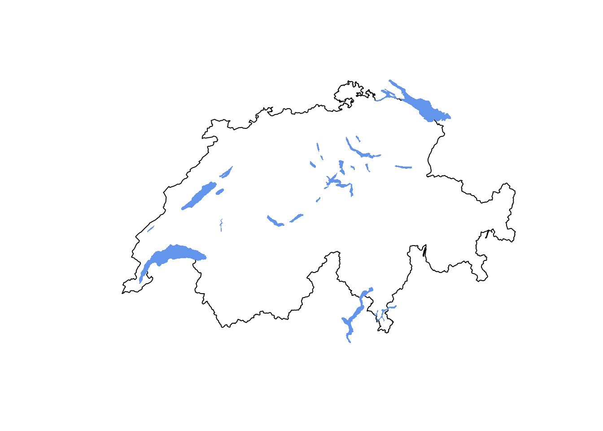
Rayshader requires that waterbodies are represented in raster format, hence
we’ll have to rasterize them. In addition (and don’t ask me why) we need to
“flip” the resulting raster (mirror it on the x axis) so that it aligns with the
elevation raster.
# Rasterize waterbodies
water <- rasterize(water, elev, field = 1, background = 0)
# For whatever reason we need to flip the water raster
water <- flip(water, "x")
# Convert water to a matrix
wamat <- raster_to_matrix(water)
# Visualize
elmat %>%
sphere_shade(., texture = "imhof1") %>%
add_water(., wamat, color = "lightblue") %>%
plot_map()
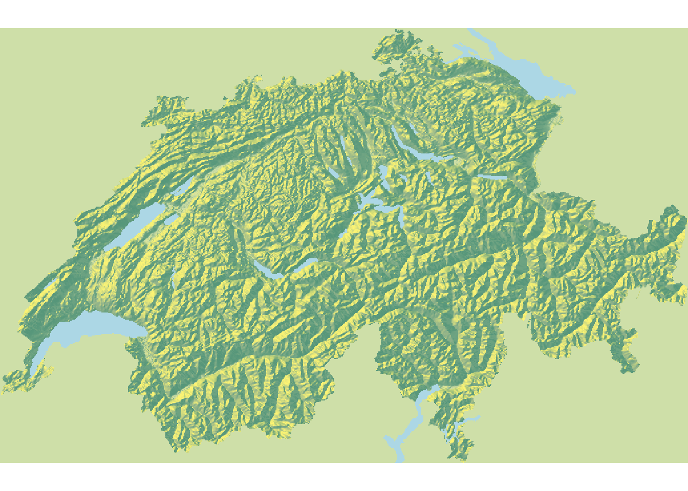
Awesome! This already looks much cooler. But it’s not really in 3d yet. So let’s
give it a final twist by putting everything into proper 3d. We’ll also add some
shadows, make the water slightly transparent, and add bit of depth of field.
# Prepare a nice map in 3D
elmat %>%
sphere_shade(., texture = "imhof1") %>%
add_water(., wamat, color = "lightblue") %>%
add_shadow(., ray_shade(elmat), 0.7) %>%
add_shadow(., ambient_shade(elmat), 0.7) %>%
plot_3d(.
, elmat
, zscale = 200
, fov = 0
, theta = 0
, phi = 30
, zoom = 0.40
, windowsize = c(2000, 1000)
, wateralpha = 0.5
, waterlinecolor = "white"
, waterlinealpha = 0.5
)
Sys.sleep(0.2)
render_depth(focus = 0.6, focallength = 80, clear = TRUE)

Bathymetry Data
In some cases, you may be interested in bathymetric data, i.e. the topography of
seas. For this, there’s a brilliant r-package called marmap which enables you
to access such data from the NOAA database. For instance, we can easily download
bathymetry data for the Mariana
Trench. Note that the downloaded
file will not be in raster format. Still, we can easily coerce it using
marmap::as.raster(). Afterwards, you can do all the fany things we’ve been
doing so far with it.
# Load the marmap package
library(marmap)
# Download bathymetry data for the Mariana Trench
bathy <- getNOAA.bathy(
lon1 = 140
, lon2 = 155
, lat1 = -13
, lat2 = 0
, resolution = 4
)
# Coerce to a raster
bathy <- marmap::as.raster(bathy)
# Visualize it
plot(bathy, col = rev(viridis(50)), box = F, axes = F, horizontal = T)
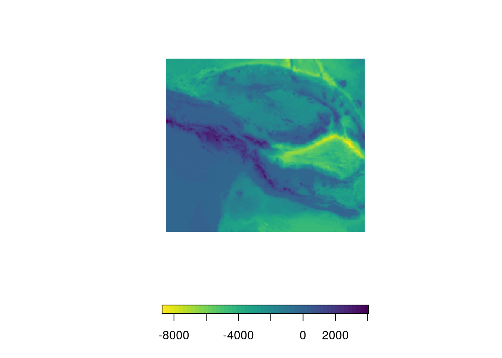
I won’t go into further details but the package offers many more useful
functions and has great plotting capabilities that allow you to generate
publication ready plots. You can find out about all the nifty little tricks and
percs of this package in its beautiful
vignette.